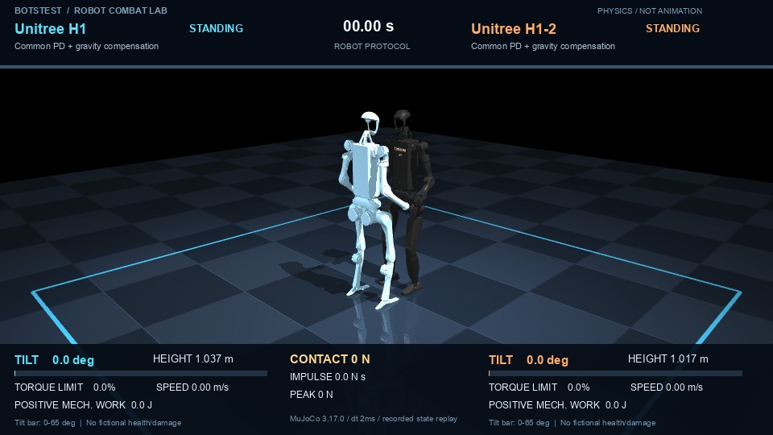
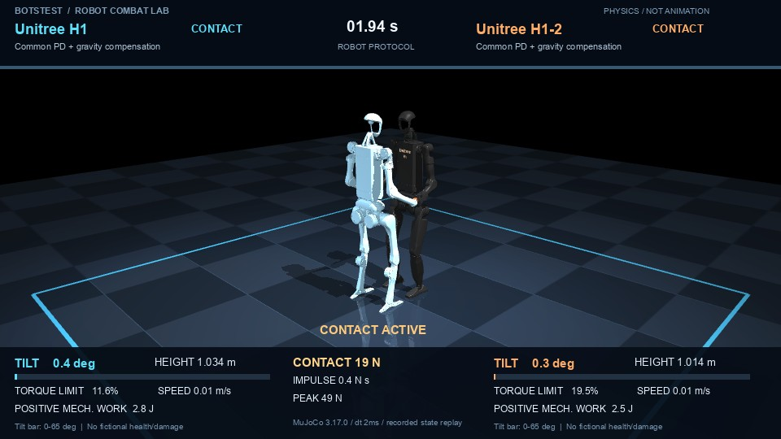
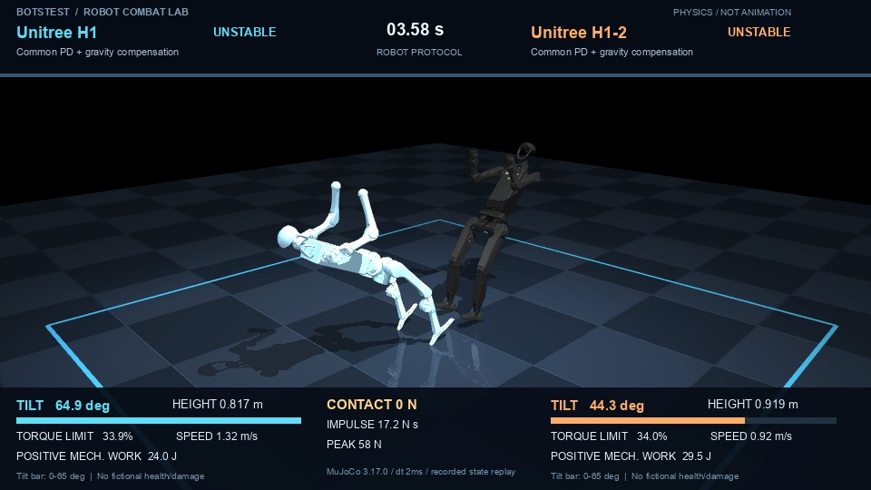
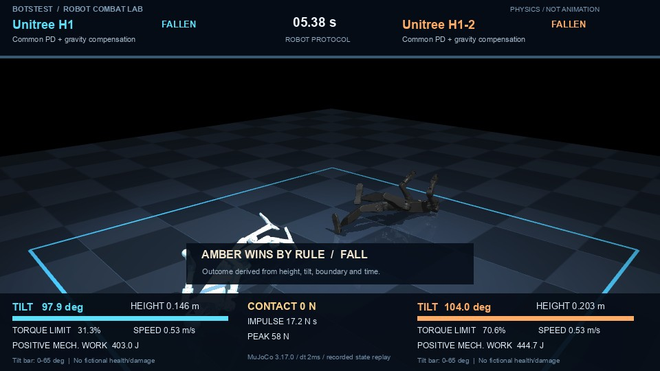
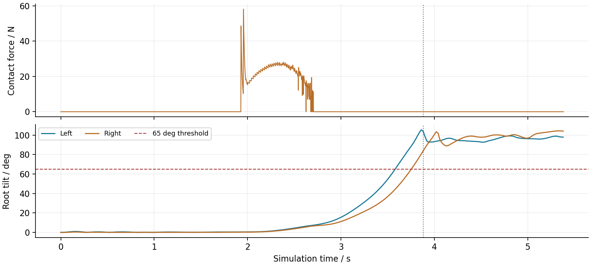

在同一物理场景中，保留接触、失衡、恢复和失败。
交付包含两个分开的榜单、每场完整3D视频、500Hz原始积分状态和控制轨迹、50Hz可视化测量、模型输入输出、接触明细及网页回放。
本体榜衡量公开模型在共同控制算法、几何校准与规定伸臂推挤任务下的表现；模型榜衡量同一G1本体上两套实际运动模型部署包的接触抗扰表现。它们均不是实机固有格斗实力排名，也不是VLA或语言模型的通用智能排名。
控制频率、动作解码、原生伺服增益、质量惯量和力矩上限均随配置保存。不存在游戏血量、编造损伤、动画位移或预设赢家。
2026-10-24；本机Mac ARM64、16GB内存，MuJoCo 3.17.0，真实Torch/ONNX权重本地运行。完整版本与平台见preflight.json。
Slogan：A field guide to embodied intelligence.
| 项目 | 本体榜 | 运动模型榜 |
|---|---|---|
| 身体 | G1 rev1.0 / H1 / H1-2无灵巧手 | 同一G1 rev1.0，29自由度 |
| 控制 | 共同重力补偿PD、几何中性姿态校准、规定伸臂前倾 | 同一速度追踪驱动；两套原生ONNX部署包 |
| 配对 | 3个本体对，每组3摩擦条件、交换左右 | 4组摩擦/速度条件、交换左右 |
| 物理步长 / 控制周期 | 2ms / 20ms | 2ms / 20ms |
| 结局 | 倒地、越界或限时平局 | 倒地、越界或限时平局 |
摩擦系数为0.6、0.8、1.0；微小初始横向偏移和朝向扰动由明确随机种子产生，左右交换时保持条件。接触前自发失败、没有接触或数值失败不会计榜；原记录仍保留。
根部倾角大于65°，或高度低于中性根部高度55%，连续0.30秒判倒地；根部位置越过±2.5m边界判出界；双方同时失败或限时仍未产生失利则平局。视频保留判定后1.5秒的实际物理运动。
本体姿态增益采用公开配置并对缺失上肢参考作明确共同设定；重心通过相同几何方法校准。型号间仍有控制校准影响。本体排序只对本协议有效，不能声称纯机械能力已被完全隔离。模型榜保留各部署包的原生增益和动作尺度，因此比较的是部署包整体，不是神经网络架构单独优劣。
| 排名 / 实体 | Elo | 胜 / 平 / 负 | 分数率 | 样本重抽样区间 |
|---|---|---|---|---|
| 1 / Unitree H1-2 handless / 27 DoF | 1554.9 | 6 / 6 / 0 | 75.0% | 62.5–87.5% |
| 2 / Unitree G1 rev1.0 / 29 DoF | 1500.4 | 0 / 12 / 0 | 50.0% | 50.0–50.0% |
| 3 / Unitree H1 / 19 DoF | 1444.8 | 0 / 6 / 6 | 25.0% | 12.5–37.5% |
本体对局中，H1-2在本次固定动作协议下对H1取得胜局；G1与另外两种本体的对局为平局。因此本次Elo顺序并不证明任意两台机器人之间都存在严格强弱。
Elo初值1500、K=24，对200种确定性洗牌顺序取均值，减少顺序偶然性。分数率按胜1、平0.5、负0计算；表中区间为已记录对局重抽样的分数率范围。左右配对、摩擦条件及小样本存在依赖，区间不是硬件总体性能置信区间；全平局的零宽区间也不代表总体确定。
有效场次：18。被排除场次：0。完整相互对手矩阵见leaderboards.json，所有平局均保留。
| 排名 / 实体 | Elo | 胜 / 平 / 负 | 分数率 | 样本重抽样区间 |
|---|---|---|---|---|
| 1 / Unitree RL MjLab · G1 velocity v0 | 1519.2 | 2 / 6 / 0 | 62.5% | 50.0–81.2% |
| 2 / Unitree RL Lab · G1 velocity v0 | 1480.8 | 0 / 6 / 2 | 37.5% | 25.0–50.0% |
两套运动模型的多数对局为平局；较高速度条件下出现边界失利，构成当前积分差。样本较少，不能据此宣称普遍优劣，更不能外推到格斗训练或实机。
Elo初值1500、K=24，对200种确定性洗牌顺序取均值，减少顺序偶然性。分数率按胜1、平0.5、负0计算；表中区间为已记录对局重抽样的分数率范围。左右配对、摩擦条件及小样本存在依赖，区间不是硬件总体性能置信区间；全平局的零宽区间也不代表总体确定。
有效场次：8。被排除场次：0。完整相互对手矩阵见leaderboards.json，所有平局均保留。
| 公开模型 | 总质量 / kg | 受控自由度 | 边界 |
|---|---|---|---|
| Unitree G1 / 29 DoF | 33.341142 | 29 | Official G1 rev1.0 full 29-DoF articulated model |
| Unitree H1 / full body | 51.749896 | 19 | Official articulated H1 model; public rigid-body/actuator parameters |
| Unitree H1-2 / full body | 66.984000 | 27 | Official articulated handless H1-2 model; no dexterous finger dynamics |
使用unitreerobotics/unitree_rl_lab的G1 29自由度velocity/v0 ONNX，以及unitreerobotics/unitree_rl_mjlab的G1 velocity/v0 ONNX。保留各自关节映射、观测历史、动作尺度及增益。旧的低自由度Gym策略仅用于开发诊断，不参加正式模型榜。
公开运动模型对手部碰撞有所简化。本项目依据原橡胶手网格补充无质量的凸包碰撞代理，只增加跨机器人/地面接触，不增加惯量或隐藏自碰撞支持。H1上游无用占位关节被固定在零位并移除空电机，其余质量与参数保持。摩擦为试验标准条件，并非实测材料值。
共同控制器在关节力矩约束内施加PD与静态支撑力估计得到的重力补偿，使用MuJoCo内部仿射伺服进行隐式积分；不会给自由根部施加扶正外力。正机械功累计来自实际电机力矩×角速度，不是电池能耗。





示例为robot-03-f2-m0。接触力曲线使用500Hz接触样本聚合，倾角使用50Hz可视化测量。虚线为倒地角度阈值，竖线为实际判定时间；高力峰值不能直接解释为结构损伤。
| 测试 | 覆盖 | 当前证据 |
|---|---|---|
| 无接触站立与前进 | 3本体站立＋2模型站立/前进 | 7项基线通过 |
| 相同伸臂/前倾，无对手 | 3本体、原动作协议 | 均持续至限时，无接触、无倒地 |
| 输入权重与动作 | 真实下载权重、保存原始观测与输出 | 文件SHA和神经网络重执行 |
| 档案与物理结果 | 正式26场完整轨迹、接触、机械功与判定 | 独立重算，不只信result.json |
| 重放 | 保存MuJoCo完整积分状态、控制输入 | 每场选取5个时间点重新积分一步 |
| 视频 | 每场完整时长、1280×720、24fps | 逐场ffprobe并抽查画面 |
验证脚本会检查所有来源文件SHA-256、所有档案哈希、物理步时间连续性、自由根部、无隐藏外力、力矩限幅、完整状态重放，以及UI测量和原始状态一致性。验证范围以results/verification.json中的实际输出为准，不将少量点检描述成完整长期重新积分。
| 对局 | dt对照 | 胜负一致 | 接触冲量相对变化 |
|---|---|---|---|
| robot-03-f2-m0 | 2ms → 1ms | 是 | 0.20% |
| ai-f4-m0 | 2ms → 1ms | 是 | 0.42% |
保持50Hz控制与相同配置，分别对一场本体对抗和一场较高速度模型对抗，将物理步长减半。完整验证轨迹保存在results/validation，不与正式2ms榜单混合。
这是两场代表性检查，不是对全部对局、所有摩擦与所有接触峰值的收敛证明。接触模型、碰撞凸包、摩擦、控制器与初始微扰都可能影响长期结果，尤其是边界附近的胜负。
没有结构破坏、材料疲劳、温升、电机电流/电池模型、总线时延或感知误差实测；没有为商用未公开机器人猜测CAD、惯量与控制权重；没有把普通语言模型直接当作关节控制器。
| 对局 | 协议 / μ | 结果 | 判定时间 | 原始数据与视频 |
|---|---|---|---|---|
| robot-01-f1-m0 | 本体 / 0.6 | time_limit / 平局 | 12.000s | 视频 · 数据 |
| robot-01-f1-m1 | 本体 / 0.6 | time_limit / 平局 | 12.000s | 视频 · 数据 |
| robot-01-f2-m0 | 本体 / 0.8 | time_limit / 平局 | 12.000s | 视频 · 数据 |
| robot-01-f2-m1 | 本体 / 0.8 | time_limit / 平局 | 12.000s | 视频 · 数据 |
| robot-01-f3-m0 | 本体 / 1.0 | time_limit / 平局 | 12.000s | 视频 · 数据 |
| robot-01-f3-m1 | 本体 / 1.0 | time_limit / 平局 | 12.000s | 视频 · 数据 |
| robot-02-f1-m0 | 本体 / 0.6 | time_limit / 平局 | 12.000s | 视频 · 数据 |
| robot-02-f1-m1 | 本体 / 0.6 | time_limit / 平局 | 12.000s | 视频 · 数据 |
| robot-02-f2-m0 | 本体 / 0.8 | time_limit / 平局 | 12.000s | 视频 · 数据 |
| robot-02-f2-m1 | 本体 / 0.8 | time_limit / 平局 | 12.000s | 视频 · 数据 |
| robot-02-f3-m0 | 本体 / 1.0 | time_limit / 平局 | 12.000s | 视频 · 数据 |
| robot-02-f3-m1 | 本体 / 1.0 | time_limit / 平局 | 12.000s | 视频 · 数据 |
| robot-03-f1-m0 | 本体 / 0.6 | fall / 右 | 3.890s | 视频 · 数据 |
每场文件夹包含config.json、scene.xml、精确编译模型引用与无损补丁、trajectory.npz、policy_io.npz、contacts.npz、telemetry.json、events.json、result.json、manifest.json及完整battle.mp4。编译模型的共享基底位于results/model-cache，搬移实验包时应保留目录结构。
| 对局 | 协议 / μ | 结果 | 判定时间 | 原始数据与视频 |
|---|---|---|---|---|
| robot-03-f1-m1 | 本体 / 0.6 | fall / 左 | 3.884s | 视频 · 数据 |
| robot-03-f2-m0 | 本体 / 0.8 | fall / 右 | 3.880s | 视频 · 数据 |
| robot-03-f2-m1 | 本体 / 0.8 | fall / 左 | 3.878s | 视频 · 数据 |
| robot-03-f3-m0 | 本体 / 1.0 | fall / 右 | 3.878s | 视频 · 数据 |
| robot-03-f3-m1 | 本体 / 1.0 | fall / 左 | 3.878s | 视频 · 数据 |
| ai-f1-m0 | 模型 / 0.6 | time_limit / 平局 | 16.000s | 视频 · 数据 |
| ai-f1-m1 | 模型 / 0.6 | time_limit / 平局 | 16.000s | 视频 · 数据 |
| ai-f2-m0 | 模型 / 0.8 | time_limit / 平局 | 16.000s | 视频 · 数据 |
| ai-f2-m1 | 模型 / 0.8 | time_limit / 平局 | 16.000s | 视频 · 数据 |
| ai-f3-m0 | 模型 / 1.0 | time_limit / 平局 | 16.000s | 视频 · 数据 |
| ai-f3-m1 | 模型 / 1.0 | time_limit / 平局 | 16.000s | 视频 · 数据 |
| ai-f4-m0 | 模型 / 1.0 | boundary_exit / 右 | 14.374s | 视频 · 数据 |
| ai-f4-m1 | 模型 / 1.0 | boundary_exit / 左 | 15.986s | 视频 · 数据 |
每场文件夹包含config.json、scene.xml、精确编译模型引用与无损补丁、trajectory.npz、policy_io.npz、contacts.npz、telemetry.json、events.json、result.json、manifest.json及完整battle.mp4。编译模型的共享基底位于results/model-cache，搬移实验包时应保留目录结构。
cd projects/robot-combat-lab PYTHONPATH=src MUJOCO_GL=cgl .venv/bin/python -m combatlab.cli serve # 浏览器：http://127.0.0.1:8767 PYTHONPATH=src .venv/bin/python -m combatlab.cli verify
| 来源 | 固定提交 |
|---|---|
| unitreerobotics/unitree_rl_gym | 276801e46c5d4335 |
| unitreerobotics/unitree_rl_lab | 4960b84732b0c2ec |
| unitreerobotics/unitree_rl_mjlab | 1425b15f73bd4095 |
| unitreerobotics/unitree_mujoco | 1eb6642e3f3fdfb7 |
共263个第三方资产文件，逐个SHA-256见assets/provenance.json。许可证或版权头保留在来源资产中；没有明确授权信息的来源不作额外许可声明。项目未与相关厂商合作或获得背书。
双榜单分开；完整视频同步物理数值与事件；3D状态回放支持时间定位、拖动视角与缩放。交互模式可选择人机、人人或模型对抗，人工仅改变速度指令，关节仍由真实运动模型和物理引擎控制；交互场次单独保存，不进入正式榜单。
作者：BotsTest · https://botstest.com/ · A field guide to embodied intelligence.